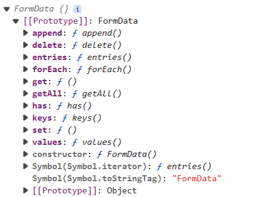

| item | desc |
|---|---|
| FormData.append(name, value) | 添加一个值对 |
| FormData.delete(name) | 删除指定的 key 对应的值对 |
| FormData.set(name) | 修改值对 key 的值 value |
| FormData.get(name) | 获取属性第一个值 |
| FormData.getAll(name) | 获取所有值，返回的是一个数组 |
| FormData.has(name) | 是否有一个指定 key 的值对 |
| FormData.keys() | 迭代器对象 iterator；所有的 key |
| FormData.values() | 迭代器对象 iterator；所有的值 value |
| FormData.entries() | 迭代器对象 iterator；所有的 key 和所有的值 value |

const form = document.querySelector('form')
form.addEventListener('submit', e => {
e.preventDefault()
let formData = new FormData(form)
console.log('formData', formData);
console.log('formdata', Array.from(formData));
console.log('formdata', Array.from(formData.keys()));
console.log('msg', formData.get('msg'));/* 获取数据 */
})
form.addEventListener('submit', e => {
e.preventDefault()
let formData = new FormData(form)
console.log('formdata 1', Array.from(formData));
formData.set('msg', 'glpla.github.io')/* 修改数据 */
console.log('formdata 2', Array.from(formData));
})
form.addEventListener('submit', e => {
e.preventDefault()
let formData = new FormData(form)
console.log('formdata 1', Array.from(formData));
formData.set('ugender', 'male')/* 追加数据 */
console.log('formdata 2', Array.from(formData));
})
form.addEventListener('submit', e => {
e.preventDefault()
let formData = new FormData(form)
console.log('formdata 1', Array.from(formData));
formData.delete('msg')/* 删除数据 */
console.log('formdata 2', Array.from(formData));
})